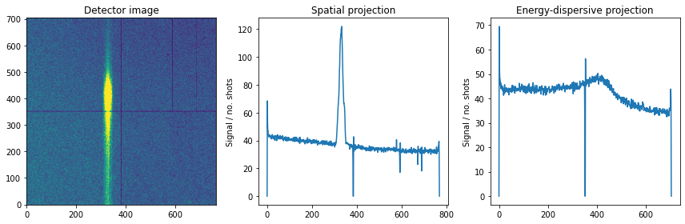
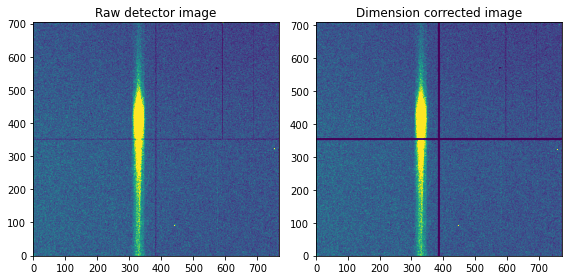

Isolating inelastic signal¶
Task: histogram and find signal
histogram
img
spatial projection
energy-dispersive projection
As examples we use three OF runs [001,002,003], two 1F runs [004,005], two 2F runs [006,007], and one 3F run [008].
Isolating inelastic signal¶
foo
Image of elastic, inelastic, and artifact signal¶
bar
Finding region-of-interest (ROI)¶
foobar
Note
Check observables (first moments) to established values to ensure that manual detector geometry works well.
import h5py
import numpy as np
import matplotlib.pyplot as plt
def load_run(run):
fh = h5py.File('../../example_data/run-%03d.h5' %run, 'r')
x = fh['x'][()]; y = fh['y'][()]
adu = fh['adu'][()]; ndroplets = fh['ndroplets'][()]
gmd = fh['pulse_energy'][()]; fh.close()
return x,y,adu,ndroplets,gmd
def extract(runs):
x = []; y = []; adu = []; ndroplets = []; gmd = []
for run in runs:
tmp_x,tmp_y,tmp_adu,tmp_ndroplets,tmp_gmd = load_run(run)
x.append(tmp_x); y.append(tmp_y); adu.append(tmp_adu)
ndroplets.append(tmp_ndroplets); gmd.append(tmp_gmd)
return np.concatenate(x),np.concatenate(y),np.concatenate(adu),np.concatenate(ndroplets),np.concatenate(gmd)
x,y,adu,ndroplets,gmd = extract([1]) # calibration data
fig = plt.figure(figsize=(12,4))
plt.subplot(131); plt.title('Detector image')
img, xedges, yedges = np.histogram2d(x, y, bins=[np.arange(705), np.arange(769)],weights=adu)
vmin, vmax = np.percentile(img, [1, 99]) # make colormap only cover the 1-99 percentile (aesthetics)
plt.imshow(img, origin='lower',vmin=vmin, vmax=vmax,aspect='auto')
plt.subplot(132); plt.title('Spatial projection')
proj = np.sum(img, axis=0); plt.plot(proj/len(ndroplets))
plt.ylabel('Signal / no. shots')
plt.subplot(133); plt.title('Energy-dispersive projection')
proj = np.sum(img, axis=1); plt.plot(proj/len(ndroplets))
plt.ylabel('Signal / no. shots')
plt.tight_layout()
plt.show()

def manual(img):
new_img = []
I = 0
for i in np.arange(709):
if (i > 352) and (i < 358):
new_img.append(np.zeros(len(img[0])+5))
else:
tmp = img[I]
for j in np.arange(5):
tmp = np.insert(tmp, 384, 0.0)
new_img.append(tmp)
I += 1
return new_img
fig = plt.figure(figsize=(12,4))
plt.subplot(131); plt.title('Detector image')
img, xedges, yedges = np.histogram2d(x, y, bins=[np.arange(705), np.arange(769)],weights=adu)
img = manual(img)
vmin, vmax = np.percentile(img, [1, 99])
plt.imshow(img, origin='lower',vmin=vmin, vmax=vmax,aspect='auto')
plt.subplot(132); plt.title('Spatial projection')
proj = np.sum(img, axis=0); plt.plot(proj/len(ndroplets))
plt.ylabel('Signal / no. shots')
plt.subplot(133); plt.title('Energy-dispersive projection')
proj = np.sum(img, axis=1); plt.plot(proj/len(ndroplets))
plt.ylabel('Signal / no. shots')
plt.tight_layout()
plt.show()

def create_img(x,y,adu,adu_int,weight):
ind, = np.where((adu >= adu_int[0]) & (adu <= adu_int[1]))
if weight == True:
img, xedges, yedges = np.histogram2d(x[ind], y[ind], bins=[np.arange(705), np.arange(769)],weights=adu[ind])
elif weight == False:
img, xedges, yedges = np.histogram2d(x[ind], y[ind], bins=[np.arange(705), np.arange(769)])
vmin, vmax = np.percentile(img, [1, 99])
img = manual(img)
return img,vmin,vmax
###############################
# histogram and image of PS2 0F
###############################
# signal regions for artifact, XES, and elastic scattering
adu_art = [ 45.0, 70.0]
adu_xes = [ 97.0,123.0]
adu_sca = [145.0,180.0]
runs_0F = [1,2,3]
x,y,adu,ndroplets,gmd = extract(runs_0F)
fig = plt.figure(figsize=(12,7))
################
plt.subplot(231); plt.title('Histogram')
histY, histX = np.histogram(adu,bins = np.arange(20,300))
plt.plot(histX[1:]-0.5,histY)
ylims = [0.01*np.max(histY),1.1*np.max(histY)]
plt.plot([adu_art[0],adu_art[0]],ylims,'-',color='g');plt.plot([adu_art[1],adu_art[1]],ylims,'-',color='g')
plt.plot([adu_xes[0],adu_xes[0]],ylims,'-',color='r');plt.plot([adu_xes[1],adu_xes[1]],ylims,'-',color='r')
plt.plot([adu_sca[0],adu_sca[0]],ylims,'-',color='k');plt.plot([adu_sca[1],adu_sca[1]],ylims,'-',color='k')
plt.yscale('log'); plt.xlabel('Signal strength (ADU)')
################
plt.subplot(234); plt.title('Artifact')
img,vmin,vmax = create_img(x,y,adu,adu_art,True)
plt.imshow(img, origin='lower',vmin=vmin, vmax=vmax,aspect='auto')
plt.subplot(232); plt.title('Spatial projection')
plt.plot(np.sum(img, axis=0),color='g')
################
plt.subplot(235); plt.title('XES signal')
img,vmin,vmax = create_img(x,y,adu,adu_xes,True)
plt.imshow(img, origin='lower',vmin=vmin, vmax=vmax,aspect='auto')
plt.subplot(232)
plt.plot(np.sum(img, axis=0),color='r')
################
plt.subplot(236); plt.title('Elastic scattering')
img,vmin,vmax = create_img(x,y,adu,adu_sca,True)
plt.imshow(img, origin='lower',vmin=vmin, vmax=vmax,aspect='auto')
plt.subplot(232)
plt.plot(np.sum(img, axis=0),color='k')
plt.legend(('Artifact','XES','Elastic'),loc='upper right',fontsize=10)
################
plt.tight_layout()
plt.show()
/home/thomas/Notebook/anaconda/lib/python3.7/site-packages/ipykernel_launcher.py:40: MatplotlibDeprecationWarning: Adding an axes using the same arguments as a previous axes currently reuses the earlier instance. In a future version, a new instance will always be created and returned. Meanwhile, this warning can be suppressed, and the future behavior ensured, by passing a unique label to each axes instance.
/home/thomas/Notebook/anaconda/lib/python3.7/site-packages/ipykernel_launcher.py:46: MatplotlibDeprecationWarning: Adding an axes using the same arguments as a previous axes currently reuses the earlier instance. In a future version, a new instance will always be created and returned. Meanwhile, this warning can be suppressed, and the future behavior ensured, by passing a unique label to each axes instance.
# print corresponding
xest.function?
Object `xest.function` not found.
# use actual function